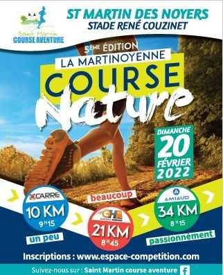
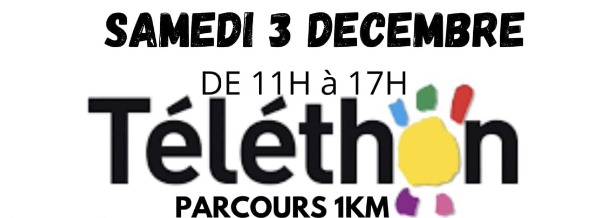

Nos évènements
La Martinoyenne Course Nature
Dimanche 26 Février 2023 - 6ème édition
Pour cette nouvelle édition de la Martinoyenne, nous vous proposons 3 formats de courses:
- Le 10km : une course avec route et chemin
- Le 21km : un trail D+300m
- le 34km : un trail D+500m
Nouveau cette année: les randonnées
Avis aux amateurs de marches à pieds, cette année nous proposons également des randonnées de 7, 10 et 15km. Les inscriptions se font uniquement sur place (6€ par adultes et 3€ par enfants) Le départ est libre entre 8h et 10h. En ce qui concerne les différents parcours de randonnées. Celui de 7km se situe autour du bourg de Saint Martin. Quant à ceux de 10 et 15km, on s'éloigne plus jusqu'à la colline du Moulin des Bois. Le ravitaillement est prévu à l'arrivée et au Moulin des Bois
Cette année, nous sommes en associés avec l'association SOLINE 1€ par participant seront reversés pour des actions de soutien et d'accompagnement des personnes atteintes d'un cancer
du sein. Pour en savoir plus sur Soline : Cliquez ici !
Le plogging
On allie le sport et l'écologie !
Bien souvent lorsque nous courrons qu'importe le jour de la semaine ou le moment de la journée, il y a beaucoup trop de dechets au bord des routes et des chemins. C'est pourquoi en ce dimanche 12 Février 2023,tout les adhérents sont les bienvenues pour nettoyer la nature. Que ce soit en marchant ou en courant, il faut que l'on ramasser les cannettes, les emballages plastiques, la feraille, les paquets de cigarettes, les mégots, les masques chirurgicaux et bien d'autre, pour préservez notre environnement qui nous est si cher ! Déjà l'année dernière nous avions au total 50kg de détritus, en espérant que cette année, le bilan soit moins lourd ! Une démarche écocitoyenne que SMCA envisage reconduire chaque année.


Festinoël
Venez participer au fil rouge du TELETHON le 3 décembre 2022 animé par le SMCA en courant ou en marchant sur une boucle de 1km à faire autant de fois que vous le souhaitez ! Il y aura aussi un stand pour récolter de l'argent.